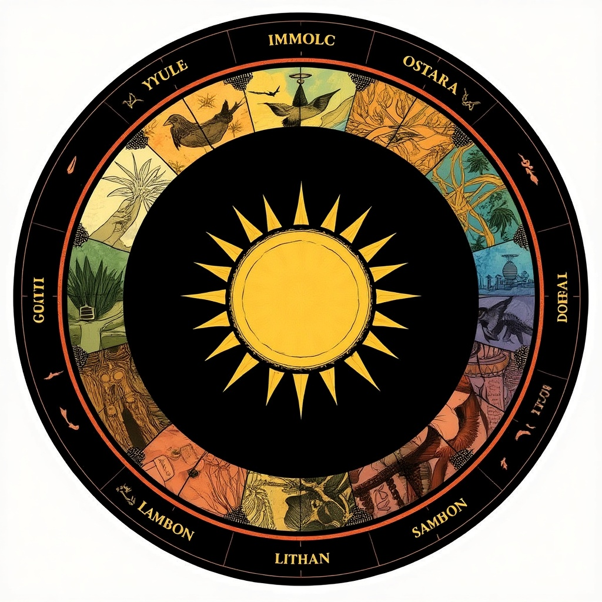

Rituale & Zyklen
Zyklen als Orientierung
Der Jahreskreis erinnert uns daran, dass alles im Leben rhythmisch ist: Licht und Dunkelheit, Aktivität und Ruhe, Innen und Außen.
Rituale als Anker
Rituale geben Halt, schaffen Verbindung und bringen uns in Kontakt mit uns selbst und der Gemeinschaft. Sie müssen nicht groß sein – ein Moment der Präsenz reicht.
Natürliche Übergänge feiern
Sonnenwenden, Tag‑und‑Nacht‑Gleichen, Mondphasen, Erntezeiten – all das sind natürliche Marker, die uns helfen, bewusster zu leben.
Rituale im Alltag
Ein Lied am Morgen. Ein Kreis am Feuer. Ein Atemzug vor dem Essen. Ein Dank am Abend. Kleine Gesten, die das Leben weicher machen.